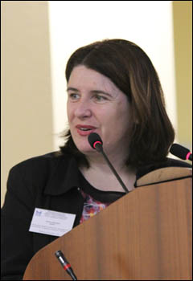
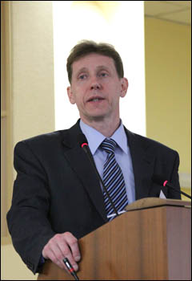
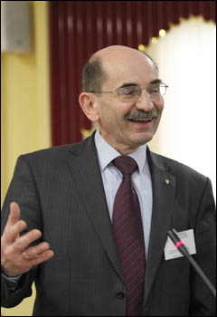
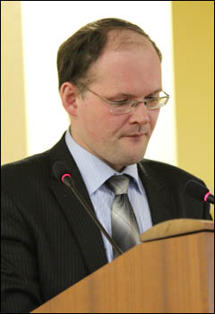

|
22–23 апреля 2013 года на базе факультета международных отношений ВГУ состоялась международная научная конференция по теме «Проблемы глобального и регионального развития в условиях становления новой системы международных отношений».
В ней приняли участие профессора, преподаватели, аспиранты и студенты Университета Йоаннеум (г. Грац, Австрия), Университета им. А. Мицкевича (г. Познань, Польша), Университета Бирмингема (Англия), Российской Академии Народного Хозяйства и Государственной Службы при Президенте РФ, Воронежского Государственного Архитектурно-Строительного Университета, Воронежской Государственной Лесотехнической Академии, Воронежского Государственного Аграрного университета, Воронежского Государственного Университета и др.
На открытии конференции с приветственными словами выступили проректор ВГУ по экономике и международному сотрудничеству проф., д.э.н. О.Н. Беленов, декан факультета международных отношений доц., д.э.н. П.А. Канапухин.

Работа конференции осуществлялась в рамках двух секций: «Современные проблемы международного и регионального развития» и «Актуальные тенденции экономики и политики зарубежных стран».
Широкие дискуссии развернулись вокруг тем пленарного заседания, на котором выступили почетные гости факультета:
- проректор, профессор факультета международного менеджмента Университета Йоаннеум Д. Киндл-Венднер
(доклад «Сотрудничество между Университетом и предприятиями: как увеличить процент трудоустройства выпускников вузов?»),
- вице-президент Воронежской Торгово-промышленной палаты С.В. Петровский
(доклад «Роль ТПП в развитии внешнеэкономических связей региона»),
- профессор факультета журналистики Университета им. А. Мицкевича С. Зыборович
(доклад «Опыт демократизации в странах Центральной Европы»),
- профессор факультета журналистики Университета им. А. Мицкевича А. Стельмах
(доклад «Эволюция политической системы Польши в период трансформации»),
- сотрудник Представительства МИД России в г. Воронеже И.Ю. Иголкин
(доклад «Основные механизмы привлечения иностранных инвестиций в регионах ЦЧР»).
 
 

Особый интерес также вызвали доклады профессоров ФМО:
- заведующего кафедрой международных отношений и мировой политики проф., д.п.н. А.А. Слинько
(доклад «Авторитарные демократии: ибероамериканская модель в условиях глобализации»),
заведующего кафедрой международной экономики и внешнеэкономической деятельностью доц., к.э.н., А.И. Лылова(доклад «О некоторых мерах развития приграничных регионов России и Украины в формате еврорегиона «Донбасс»),
- заведующего кафедрой регионоведения и экономикой зарубежных стран проф., д.э.н. А.И. Удовиченко
(доклад «Механизмы управления социально-экономическими процессами в бизнесе»).
Всего в рамках конференции было заслушено более 50 докладов исследователей.
По материалам конференции планируется публикация одноименного сборника статей. |